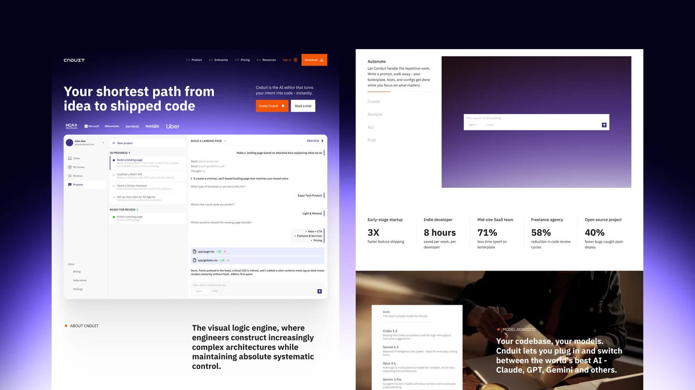
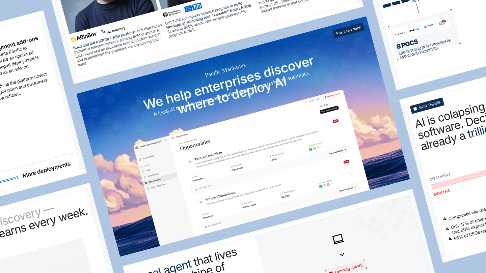
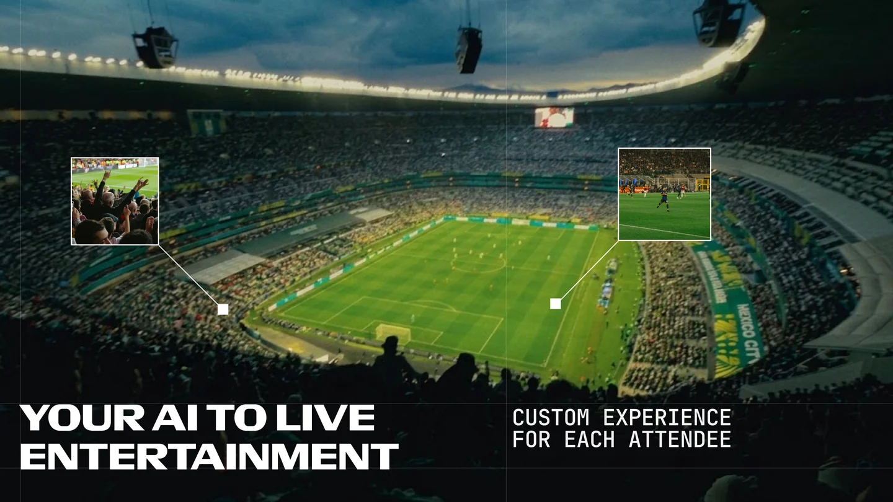
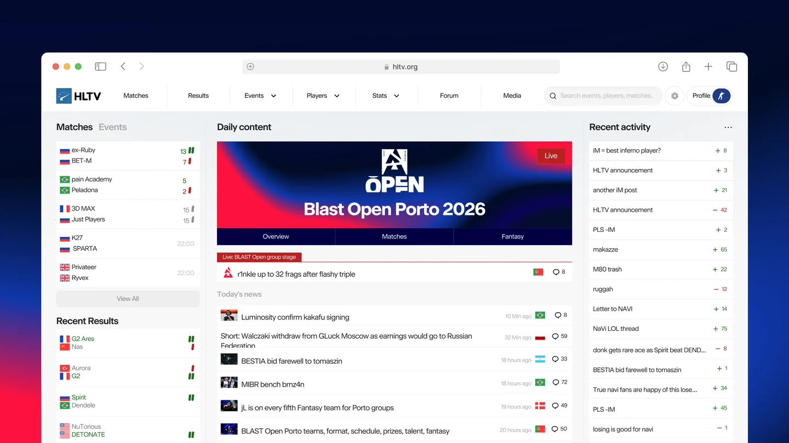
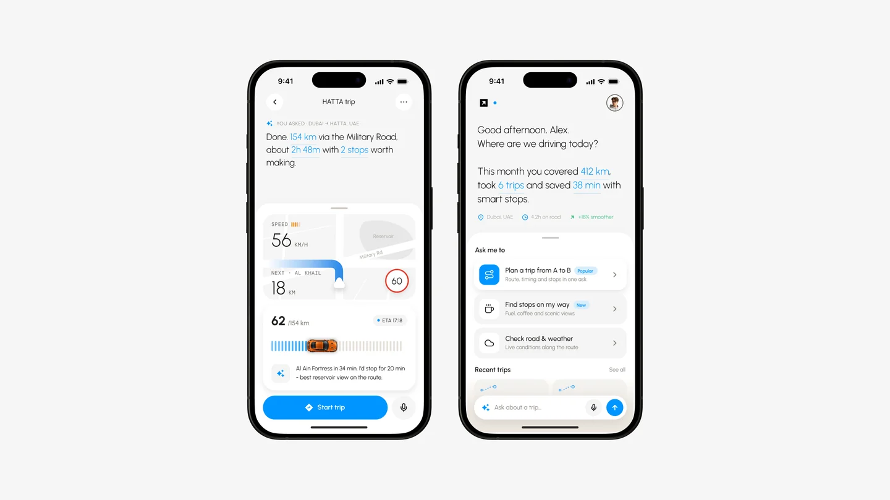
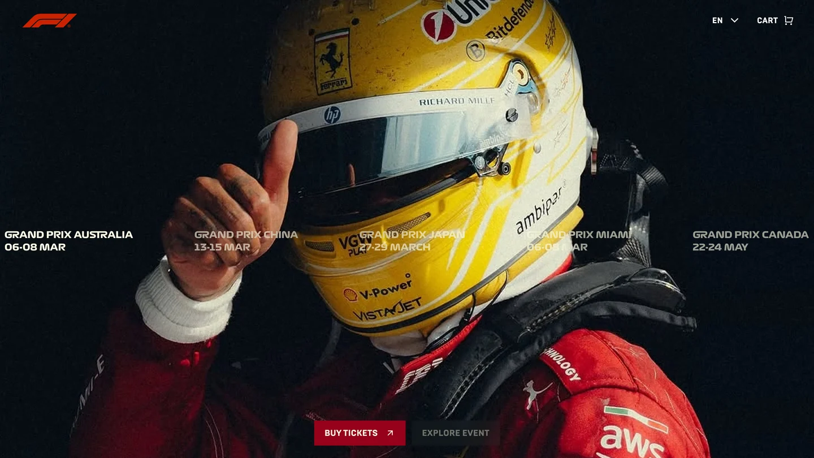

Design that ships, not design that's handed off.
I help founders ship the product their pitch deck promised.
I design it, prototype it, and sit with the engineers until it's live.
One designer from the pitch to the product your users open every day.






Product design is part of engineering now
The gap between a screen and a shipped feature used to be someone else's problem.
With AI tooling, that gap is where most products die: the build is cheap, the decisions are not
some metrics
- $10M
- raised by founders I've designed for
- 18
- products, brands and launches since 2024
- 3
- rooms I work in: founders, engineers, audiences
Featured Projects
2025 & Present
AI editor
F1 concepts
Who's in the room
-
[1] Founders
You have a thesis and a runway. I turn it into a deck, a brand and a first version that match each other.
-
[2] Audiences
The people who decide if it worked. Fans, users and investors who never see the Figma file.
Make your product impossible to ignore
Tell me what you're building and who's building it.